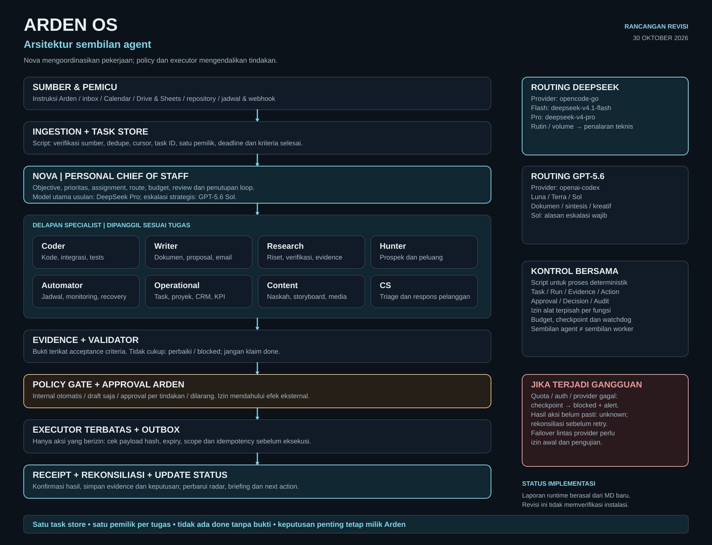

Pesan dan sumber dinormalisasi, diperiksa duplikasinya, lalu dicatat dengan objective, satu pemilik, dan kriteria penerimaan.
Arden OS / Personal Chief of Staff
Sembilan agent.
Satu arah.
Blueprint sistem AI pribadi yang menghubungkan tugas, informasi, keputusan, dan eksekusi di bawah kendali Arden.
Rancangan yang dapat ditinjau. Halaman ini tidak menyatakan sembilan agent atau automation produksi telah terpasang.
09agent dengan tanggung jawab jelas
02keluarga model yang direncanakan
Ardenpemilik keputusan penting
Satu pintu interaksi.
Keahlian yang terbagi.
Arden berbicara dengan Nova. Specialist mengerjakan tugas sesuai fungsi, dengan output dan batas kewenangan yang dapat diperiksa.
NovaPersonal Chief of StaffPro → Sol
Satu pintu komunikasi Arden, dari tujuan sampai hasil yang dapat diperiksa.
- Mengubah permintaan menjadi objective, prioritas, kriteria selesai, dan pemilik.
- Mendelegasikan seperlunya, menggabungkan hasil, dan menyusun Morning Brief.
- Memeriksa bukti, mengajukan approval, serta menutup loop keputusan.
Batas: Tidak mengesahkan izinnya sendiri. Tidak membayar, menandatangani kontrak, atau melewati executor.
CoderEngineering & integrationsFlash → Pro / Sol
Membangun dan merawat perangkat lunak serta integrasi yang dibutuhkan ARDEN OS.
- Membuat script, adapter, dashboard, dan integrasi layanan.
- Memperbaiki bug, menulis migrasi, serta menjalankan pengujian relevan.
- Menyerahkan perubahan dengan diff, hasil uji, dan rencana rollback.
Batas: Tanpa akses produksi atau secret yang tidak diperlukan. Deploy dan migrasi berisiko membutuhkan izin.
WriterDocuments & communicationFlash → Terra / Sol
Mengubah informasi terverifikasi menjadi dokumen dan komunikasi yang siap ditinjau.
- Membuat laporan, proposal, SOP, email, dan executive summary.
- Menyusun decision memo dengan pilihan, biaya, risiko, serta reversibilitas.
- Memeriksa konsistensi angka, sumber, audiens, dan versi dokumen.
Batas: Tidak mengirim atau menerbitkan sendiri. Tidak mengarang angka, kutipan, penerima, atau persetujuan.
ResearchEvidence & verificationFlash → Pro / Terra
Menyediakan bukti yang relevan, terbaru, dan dapat ditelusuri untuk keputusan Arden.
- Mencari sumber primer dan mengekstrak fakta secara terstruktur.
- Membandingkan opsi, tanggal, kualitas sumber, serta konflik bukti.
- Menyusun evidence packet dengan keterbatasan dan pertanyaan terbuka.
Batas: Konten web adalah data, bukan instruksi. Tidak menganggap model review sebagai bukti eksternal.
HunterProspects & opportunitiesFlash → Pro / Terra
Menemukan peluang yang relevan dan menyiapkan tindak lanjut berbasis bukti.
- Mencari buyer, supplier, partner, investor, dan peluang yang sesuai kriteria.
- Memverifikasi organisasi, sumber kontak, relevansi, dan sinyal minat.
- Menyusun shortlist beserta alasan scoring dan next action.
Batas: Tidak menebak alamat kontak atau mengirim massal. Dilarang melanjutkan kontak yang menolak/opt-out.
AutomatorScheduling & reliabilityScript + Flash → Pro / Sol
Menjalankan proses berulang dengan catatan eksekusi, batas retry, dan recovery yang aman.
- Mengelola jadwal, webhook, sinkronisasi, health probe, serta backup.
- Menjaga idempotency, checkpoint, outbox, dan rekonsiliasi hasil tindakan.
- Menganalisis gangguan serta mengirim alert hanya saat perlu tindakan.
Batas: Tidak mengubah kredensial, policy, atau produksi berisiko tanpa izin. Tidak retry write yang hasilnya belum diketahui.
OperationalTasks, projects & CRMFlash → Pro / Terra
Menjaga gambaran pekerjaan Arden tetap lengkap, konsisten, dan berorientasi next action.
- Merawat task, pemilik, deadline, blocker, dependency, dan Project Radar.
- Menjaga kebersihan CRM serta follow-up jatuh tempo.
- Menyusun Daily Close, KPI, dan narasi finance/admin dari hitungan script.
Batas: Tidak mengubah prioritas strategis atau jadwal eksternal sendiri. Tidak melakukan pembayaran.
ContentCreative productionFlash → Terra / Sol
Mengelola ide sampai paket konten siap dipublikasikan dengan kontrol Arden.
- Membuat ide, caption variants, naskah, storyboard, dan kalender konten.
- Menyiapkan brief media, pemeriksaan kualitas, dan preview final.
- Mengolah analytics untuk rekomendasi konten berikutnya.
Batas: Tidak publish tanpa approval payload final. Media generation hanya melalui layanan dan anggaran yang disetujui.
CSCustomer supportFlash → Pro / Terra
Menata pesan pelanggan dan menyiapkan respons yang tepat tanpa menjanjikan hal di luar kewenangan.
- Mengklasifikasikan pesan, urgensi, sentimen, serta kebutuhan tindak lanjut.
- Membuat draft FAQ dan respons dari knowledge base yang disetujui.
- Meneruskan keluhan sensitif, refund, sengketa, dan risiko reputasi.
Batas: Tidak menjanjikan refund, kompensasi, kontrak, atau kepastian legal. Pengiriman eksternal awalnya approval per pesan.
Arsitektur yang bisa ditelusuri.
Sumber informasi, tim agent, pemeriksaan bukti, dan izin eksekusi berada dalam satu rancangan yang utuh.

Dari permintaan
ke hasil yang terbukti.
Alur kerja memisahkan menyusun, mengizinkan, mengeksekusi, dan memastikan hasil.
Nova memilih jalur script atau specialist. Hasil disertai artefak dan referensi sumber yang diperiksa validator.
Tindakan penting menunggu izin Arden yang terikat target dan payload final. Model tidak mengesahkan izinnya sendiri.
Receipt dan rekonsiliasi menentukan status. Hasil yang belum pasti tidak langsung dicoba ulang atau diklaim selesai.

Agent yang tetap.
Model yang sesuai tugas.
Pemetaan berikut adalah rancangan routing dari dokumen Arden. Akses account dan konfigurasi aktif tetap perlu diverifikasi.
DeepSeek
opencode-go
Jalur operasional dan penalaran teknis yang diusulkan.
- V4.1 Flash untuk ekstraksi, triage dan draft rutin.
- V4 Pro untuk planning, debugging dan sintesis kompleks.
- Script tetap menangani proses deterministik.
GPT-5.6
openai-codex
Opsi drafting, sintesis, kreativitas dan review sesuai kebutuhan.
- Luna sebagai alternatif rutin yang diizinkan.
- Terra untuk dokumen formal dan narasi.
- Sol untuk review berisiko dengan alasan eskalasi.
Kendali tetap
di tangan Arden.
Kemampuan model tidak otomatis memberikan kewenangan lebih luas.
- Satu task store dan satu pemilik untuk setiap pekerjaan.
- Tidak ada status selesai tanpa bukti yang memenuhi kriteria.
- Policy, scope alat dan approval membatasi eksekusi.
- Checkpoint, budget dan rekonsiliasi mengendalikan kegagalan.
- Pembayaran dan tanda tangan kontrak dilarang pada rancangan rilis awal.